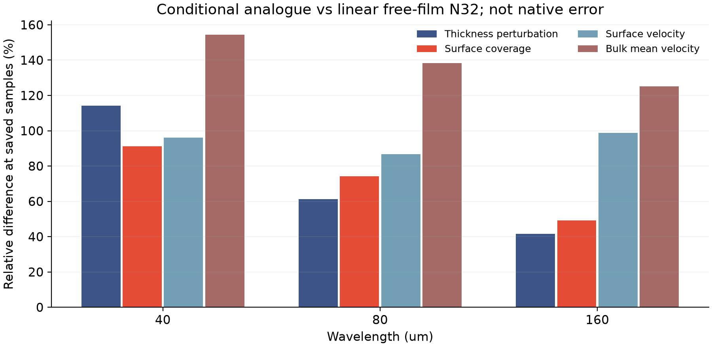
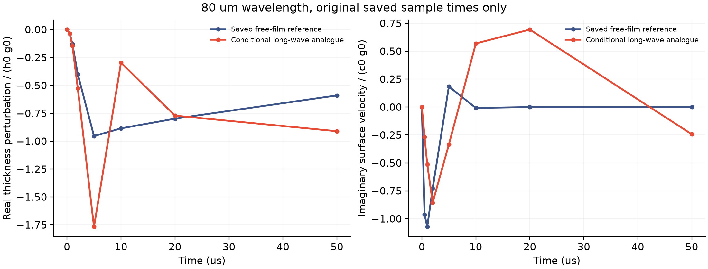

条件性的连续模型比较 · 2026-11-13
能量收支对得上，
动力响应也会一样吗？
把“节点运动加相对排液”的一个平直长波近似，与已保存的自由膜参照放在相同材料、初态和采样时刻下比较。
只比较已经说清楚的假设
条件性长波近似
将节点速度解释为共同界面速度，以它承担平面惯性和伸展黏性；膜厚另外接受 h³/(12μ) 压力驱动的相对排液。
已保存的自由膜参照
解析膜厚内部的不可压缩速度，保留内部惯性；表活与膜厚共同演化，界面和内部平均速度分别作为输出。
两者使用完全相同的密度、黏度、表面张力、表活弹性、初态和波长，没有拟合任何速率或系数。新计算只有三个状态的长波近似，九组自由膜状态和原生轨迹均未重跑。
保存时刻上的响应确实不同

| 波长 | 膜厚扰动差异 | 表活扰动差异 | 界面速度差异 | 内部平均速度差异 |
|---|---|---|---|---|
| 40 μm | 114.3% | 91.1% | 96.2% | 154.5% |
| 80 μm | 61.4% | 74.3% | 86.6% | 138.2% |
| 160 μm | 41.6% | 49.1% | 98.9% | 125.2% |

将参照阶数从 8 改为 32 后，上述相对距离的最大变化为 9.210e-11。当前差异对这组参照阶数不敏感；这仍不取消参照原有的两个失败条件，也不构成对真实肥皂膜的验证。
这个比较改变了下一步的重点
长波近似满足自己的能量耗散结构，已保存的自由膜参照也通过其能量结构检查，但两者响应并不相同。因此后续 C1 验收需要在液量、表活和功账本之外，继续检查速度含义、内部惯性和界面应力的物理对应关系。
下一步应在原生边界条件和可检验的小扰动下，直接确认哪些连续近似与原型一致，再决定是否扩充局部流动状态。当前不能据此给求解器添加校正项，也不能拟合一个交换速率来消除差异。
原计划与限制保持完整
本次没有采用实际曲面边缘、离散布局、有限步长分裂或浴液边界。此前自由膜参照仍为 17／19 项通过，两个严格阶数递减条件继续保留。模型一致性没有设置事后通过门槛。
5 微米原生时间配对继续运行。原 C1 的 2% 时间、10% 空间及 10／50／200 微秒检查、真实局部通量／牵引力、液量／表活／功连接、交换系数、薄膜元厚度比和整体条纹／保留工况实验仍全部开放；C2 未引入拟合动力学。
完整方程、源码来源与数据
事前方程与限制 · 源码与全部参照哈希 · 范围和保留的失败 · 全部九组比较 · 三状态近似的复数序列 · 近似的算术／稳定性检查 · 复现入口